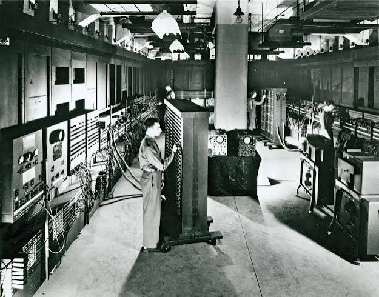
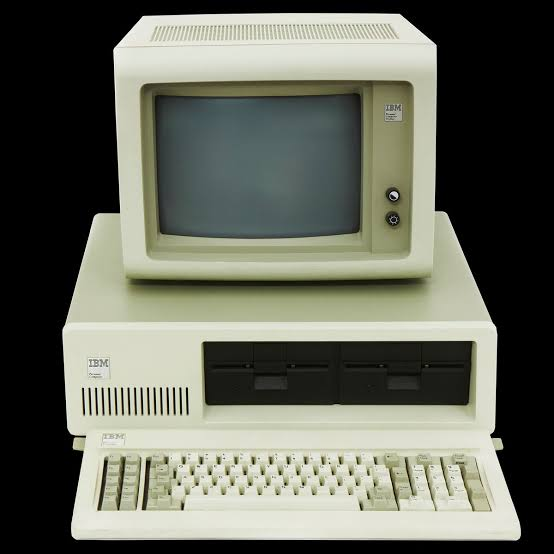
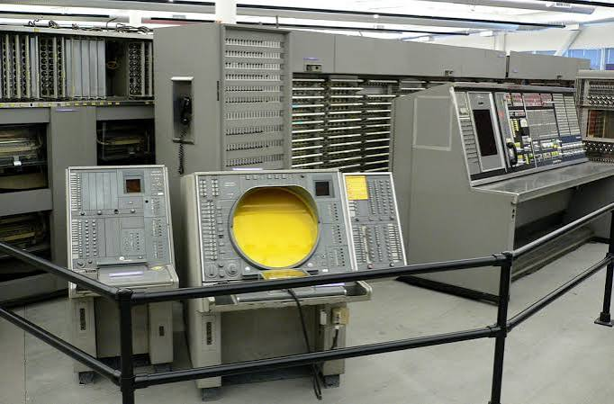
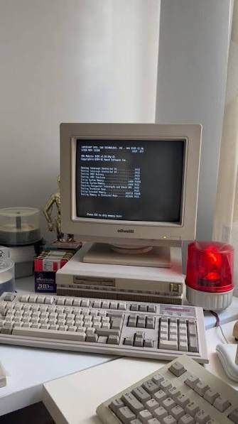
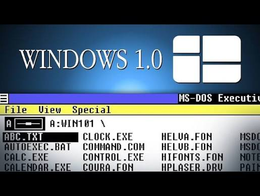
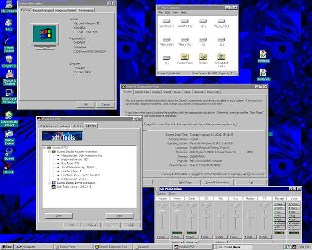
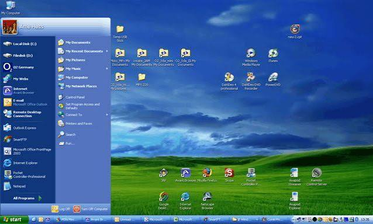
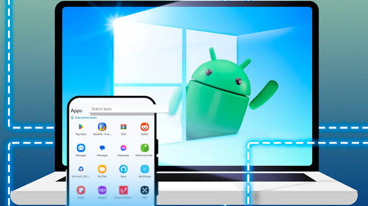
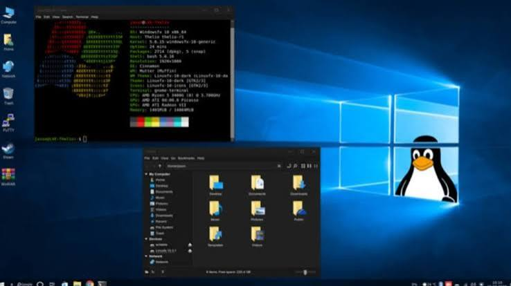
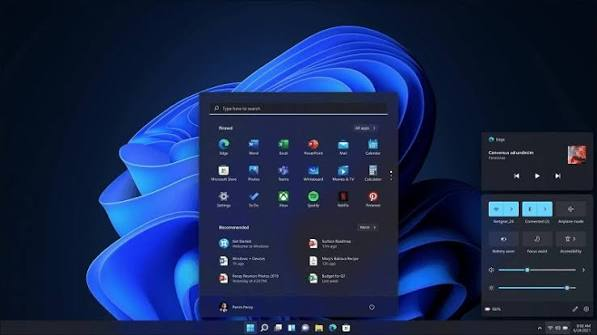

🧠 Operatsion tizim nima?
Operatsion tizim — kompyuter, telefon yoki boshqa elektron qurilmaning ishlashini boshqaradigan asosiy dasturiy ta’minotdir.
U foydalanuvchi bilan qurilma o‘rtasida aloqa o‘rnatadi va dasturlar, fayllar, xotira hamda qurilmalarning ishlashini boshqaradi.
🏠 Oddiy misol
Kompyuterni katta bir uy deb tasavvur qiling. Operatsion tizim esa shu uyni boshqaruvchi menejerga o‘xshaydi.
- 🏠 Kompyuter — uy
- 👨💼 Operatsion tizim — boshqaruvchi
- 📁 Fayllar — uydagi buyumlar
- 🖱️ Sichqoncha va klaviatura — boshqaruv vositalari
📚 Operatsion tizimlar rivojlanish bosqichlari
Operatsion tizimlar bir kunda paydo bo‘lmagan. Ular kompyuter texnologiyalarining rivojlanishi bilan bosqichma-bosqich takomillashib bordi.
🕰️ Dastlabki kompyuterlar
1940–1960-yillar

1940-yillarda dastlabki elektron kompyuterlar paydo bo‘la boshladi. Ularning hajmi juda katta bo‘lib, butun bir xonani egallashi mumkin edi.
Bu davrda zamonaviy ma’nodagi operatsion tizimlar hali mavjud emas edi. Kompyuterni boshqarish uchun dasturchilar ko‘plab amallarni qo‘lda bajarishgan.
⚙️ Dastlabki operatsion tizimlar
1950–1960-yillar

Kompyuterlar murakkablashgani sari ularni boshqarishni avtomatlashtirish zarurati paydo bo‘ldi.
Shu davrda dasturlarni navbat bilan bajarish, xotiradan foydalanish va kompyuter resurslarini boshqarishga yordam beruvchi dasturiy tizimlar rivojlana boshladi.
📦 Batch Processing
1950–1960-yillar

Batch Processing — vazifalarni bir guruh qilib yig‘ib, ularni navbat bilan avtomatik bajarish usulidir.
Bu usul dasturchilarning kompyuter oldida kutib turish vaqtini kamaytirgan va kompyuter resurslaridan samaraliroq foydalanishga yordam bergan.
💾 MS-DOS davri
1980-yillar

1980-yillarda shaxsiy kompyuterlar keng tarqala boshladi. Microsoft kompaniyasining MS-DOS operatsion tizimi shaxsiy kompyuterlarda mashhur bo‘ldi.
MS-DOS bilan ishlash asosan buyruqlarni klaviatura orqali yozish asosida amalga oshirilgan.
🪟 Windows 1.0
1985-yil

1985-yilda Microsoft Windows 1.0 versiyasini taqdim etdi.
Windows grafik interfeysga asoslangan ishlashni rivojlantirdi. Foydalanuvchilar oynalar, menyular va sichqoncha yordamida kompyuter bilan ishlash imkoniyatiga ega bo‘la boshladilar.
🖥️ Windows 95
1995-yil

1995-yilda Windows 95 chiqarildi va shaxsiy kompyuterlar tarixida muhim bosqichga aylandi.
Unda Start menyusi, taskbar va boshqa foydalanuvchi uchun qulay grafik imkoniyatlar ommalashdi.
💙 Windows XP
2001-yil

2001-yilda Windows XP taqdim etildi. U uzoq vaqt davomida eng mashhur Windows versiyalaridan biri bo‘lib qoldi.
Windows XP foydalanuvchilarga qulay interfeys, barqarorlik va keng dasturiy imkoniyatlarni taqdim etdi.
🚀 Zamonaviy operatsion tizimlar
Bugungi kunda operatsion tizimlar nafaqat kompyuterlarda, balki smartfon, planshet, televizor, avtomobil va boshqa aqlli qurilmalarda ham ishlatiladi.

🤖 Android
Android — smartfon va planshetlarda keng qo‘llaniladigan mobil operatsion tizim.
🍎 iOS
iOS — Apple kompaniyasining iPhone va boshqa Apple qurilmalarida ishlatiladigan mobil operatsion tizimi.

🐧 Linux
Linux — ochiq kodli operatsion tizimlar oilasi. U serverlar, kompyuterlar va boshqa ko‘plab qurilmalarda ishlatiladi.

🪟 Windows 11
Windows 11 — Microsoft kompaniyasining zamonaviy kompyuterlar uchun ishlab chiqilgan operatsion tizimidir.
🎯 Xulosa
Operatsion tizimlar oddiy va murakkab kompyuterlardan boshlab bugungi zamonaviy qurilmalargacha katta rivojlanish yo‘lini bosib o‘tdi.
🧩 Bilimingizni sinab ko‘ramiz!
Endi operatsion tizimlar tarixini bilishingizni test orqali tekshiramiz.